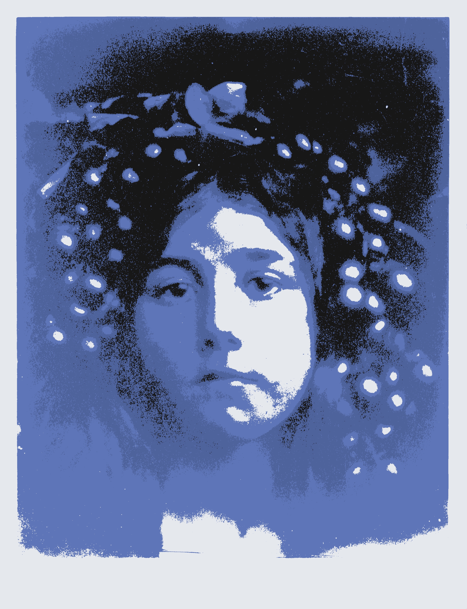

█▀▄
█▄▀os pozos hondos que reflejan la luna, así definió padre sus ojos; no negaba su belleza, pero decía que junto a ella no había destino alguno más que el ahogamiento o la locura. Le ignoré, claro está, igual que ignoré a todos los otros. Mi instrucción de ingeniero en la escuela militar me había hecho repudiar tradiciones y supersticiones. Ignoré los consejos de padre y de la tía, achacando viejas leyendas y rencillas ocultas; aludía las extrañas circunstancias que condenaron a sus antiguos pretendientes a los delirios del azar. No faltaban motivos para que un hombre de aquella zona sin futuro alguno no se diese muerte con la pistola, y a cualquiera le puede atropellar un carromato desbocado. Así empezó mi cortejo, un cortejo arrastrado y pegajoso que me llevó a aquella casa polvorienta al otro lado del río, a tomar café y a charlar con su servicial madre y aquel vegetal progenitor que solo sabía de numismática. Su familia no me quería y yo lo notaba, todos me lo decían. Pero a mí me daba igual. Terco, iba cada tarde a aquel zoológico de ratones, cucarachas y palomas, a aquella antigua mansión colonial que el óxido y la podredumbre había sentenciado. Probaba sus licores exquisitos, que su familia siempre esquivaba aludiendo su avanzada edad. Pronto la gente dejó de saludarme sin darme yo cuenta. Apenas sentí el encallecimiento de mi piel moribunda, el vello devorando mi cuerpo un poco más cada día. Pasé de la robustez de mozo al esqueletismo, de mi orgullosa pose erguida a arrastrarme como las bestias. La metamorfosis fue lenta, sin apenas darme yo cuenta. Mi escasa familia ya no me llamaba, los amigos no me reconocían. Yo a veces tampoco. Pero me dio igual, pues mi amor nunca cesaba: el cortejo dio paso al noviazgo, pasaba más tiempo con ella que con el mundo. El éxtasis de su olor y los licores me iban sometiendo. Dormía en el salón de invitados, en un catre piojoso que me marcaba de sarpullidos. Una noche, me invitó a su cuarto desconocido. Llegué a él como en un sueño, tocando el suelo con cuidado con miedo de corromperlo, guiado por su dulce gesto. Señaló el rincón de la esquina y pude verlos: dos chuchos escuálidos tirados en un rincón. Al principio no entendí, hasta que un pequeño espejo roto me devolvió mi rostro reflejado, el morro y las patas caninas, y entendí que los rumores eran ciertos. Abatido, acepté mi inevitable destino y fui a tumbarme con los otros pretendientes.
Circe
